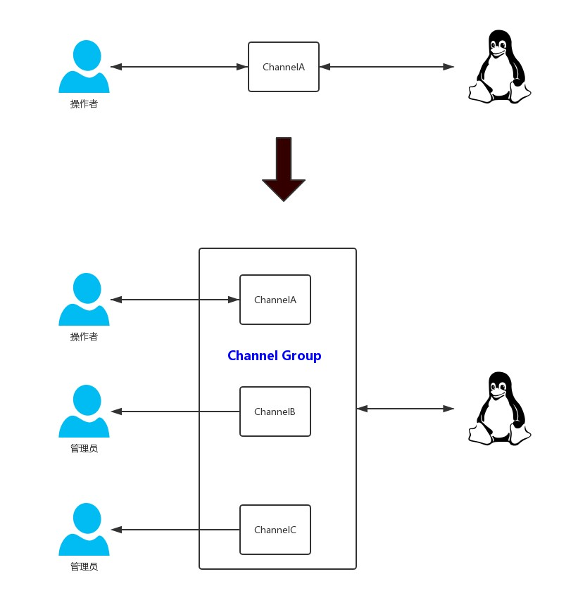
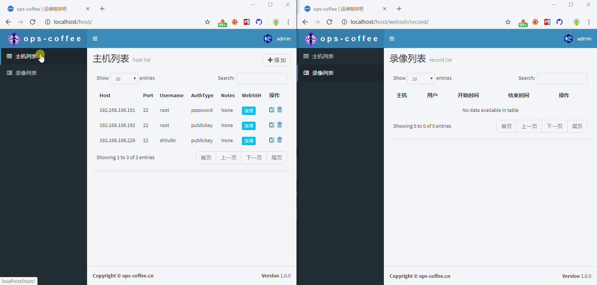

这个功能我可以不用，但你不能没有
前几篇文章实现了对物理机、虚拟机以及Kubernetes中Pod的WebSSH操作，可以方便的在web端对系统进行管理，同时也支持对所有操作进行全程录像，以方便后续的查看与审计
这一篇文章接着实现一个看起来很炫酷，但实际上你可能不会经常使用，又必须要存在的功能：实时监控用户操作，在必要的时候将用户踢下线
django通过channels实现websocket中有一个非常重要的概念叫layer，layer可以将多个channel合并成一个group，我们可以发送消息给group，那么group里的每个channel都能收到
关于Channel我有写过两篇文章结合聊天室和web端实现tail-f功能这两个案例来详细介绍，两篇文章是『Django使用Channels实现WebSocket--上篇』和『Django使用Channels实现WebSocket--下篇』，对上边提到的名词一脸懵逼的朋友可以通过这两篇文章来学习
之前的WebSSH仅是单连接，只需要客户端和服务器建立长连接，然后处理指令就ok了，我们并没有启用channel的layer，实际上也可以看作是单channel，但要实现监控的功能，就需要将操作者和管理员(监控者)的多个channel合并在一起组成一个group，这样操作者的所有操作都可以发送给这个group，同处于这个group内监控者就能实时收到消息了，大概流程变化如下图所示

接下来看下具体实现，以下所有代码均是在这篇文章的基础上进行说明讲解：『Django实现WebSSH操作物理机或虚拟机』
首先我们要启用layer，这个需要在settings.py中添加如下配置
CHANNEL_LAYERS = {
'default': {
'BACKEND': 'channels_redis.core.RedisChannelLayer',
'CONFIG': {
"hosts": [('ops-coffee.cn', 6379)],
},
},
}然后将处理WebSSH连接名为SSHConsumer的Consumer做改造，以使其支持layer，代码如下
class SSHConsumer(WebsocketConsumer):
def connect(self):
# 格式化参数
ssh_connect_args = args(self.scope)
# 新建录像记录
self.host = Host.objects.get(host=ssh_connect_args.get('host'))
self.group_name = '%s-%s-%d' % (
ssh_connect_args.get('host'), ssh_connect_args.get('username'), time.time())
self.therecord = Record.objects.create(
host=self.host,
user=self.scope['user'],
group=self.group_name,
channel=self.channel_name,
cols=ssh_connect_args.get('cols'),
rows=ssh_connect_args.get('rows'),
is_connecting=True
)
async_to_sync(self.channel_layer.group_add)(
self.group_name,
self.channel_name
)
self.accept()
# WebSocket连接成功后，连接ssh
self.ssh = SSHBridge(self.therecord, websocket=self)
self.ssh.connect(**ssh_connect_args)
def disconnect(self, close_code):
# 将连接状态置为False
self.therecord.is_connecting = False
self.therecord.save()
async_to_sync(self.channel_layer.group_discard)(
self.group_name,
self.channel_name
)
self.ssh.close()
def receive(self, text_data=None):
text_data = json.loads(text_data)
if text_data.get('flag') == 'resize':
self.ssh.resize_pty(cols=text_data['cols'], rows=text_data['rows'])
else:
self.ssh.shell(data=text_data.get('data', ''))
def ssh_message(self, event):
self.send(text_data=json.dumps(
event['message']
))在connect连接建立时新建一条记录，存储主机、用户、group_name、channel_name以及初始窗口的cols、rows信息，同时标记is_connecting为True，这里的group_name命名与文章『堡垒机的核心武器：WebSSH录像实现』中我们定义的录像文件名规则一致，另外将这篇文章中新建录像记录的操作从SSHBridge.record中给转到了连接建立的connect中来，更合理也更方便
在disconnect连接关闭时，将is_connecting标记为False，这样我们在前端页面上就可以根据这个标记来判断WebSSH是否正在连接，如果连接则展示监控和强制结束按钮，否则展示播放和命令提取按钮
同时添加个ssh_message方法，用来接收发送到组的数据
到这里，我们已经将WebSSH改造成了支持layer的模式，那么接下来就是要在用户点击监控的时候将用户与服务端建立的连接channel加入到上述group中
新建一个名为MonitorConsumer的consumer，主要用来处理监控连接
class MonitorConsumer(WebsocketConsumer):
def connect(self):
pk = self.scope['url_route']['kwargs'].get('id')
self.group_name = Record.objects.get(id=pk).group
async_to_sync(self.channel_layer.group_add)(
self.group_name,
self.channel_name
)
self.accept()
# 判断用户已经结束了这个webssh连接时就关闭监控
self.connecting = Record.objects.get(id=pk).is_connecting
if not self.connecting:
self.close()
def disconnect(self, close_code):
async_to_sync(self.channel_layer.group_discard)(
self.group_name,
self.channel_name
)
self.close()
def receive(self, text_data=None):
pass
def ssh_message(self, event):
self.send(text_data=json.dumps(
event['message']
))
MonitorConsumer与SSHConsumer有两个地方不一样，其一是SSHConsumer中我们直接新生成了个group_name，而MonitorConsumer中需要在connect时获取到要监控的ID，然后通过ID拿到group_name，将monitor连接加入到这个group，其二是监控只能看，不能操作，所以也不需要前端发送数据的term.on和Consumer的receive处理数据
最后需要修改SSHBridge方法中发送给websocket的指令，从self.websocket.send改为发送到group的模式，如下
async_to_sync(self.websocket.channel_layer.group_send)(
self.group_name,
{
'type': 'ssh.message',
'message': message
}
)至此，监控功能就算完成了，什么？前端页面怎么弄？参考下之前的WebSSH界面，几乎可以完全复制
踢用户下线就比较简单了，逻辑是点击页面上的强制结束按钮，给后端view发送个请求带上这条记录的ID，view拿到ID后，通过ID找到group_name，然后向group发送disconnect消息，这个group里的所有channel在收到disconnect消息后就会断开连接了
from asgiref.sync import async_to_sync
from channels.layers import get_channel_layer
async_to_sync(get_channel_layer().group_send)(
Record.objects.get(id=pk).group,
{'type': 'disconnect'}
)
所有实现环环相扣，单看这一篇文章可能云里雾里，不知所云，但你如果能把这个系列文章都给看下的话，我想实现个简单的堡垒机应该没有问题吧，更重要的是你会对websocket以及django中的Channels有着更加深刻的理解和运用
原本只是想给我最牛X的Alodi系统添加个WebSSH，可以方便开发或测试在项目运行过程中出现问题时提供一个快速的调试途径，没想到这竟然写了一个系列，实现了这么多有趣好玩儿的功能
最后想起了这句成语：有意栽花花不开，无心插柳柳成荫，真是奇妙~
相关文章推荐阅读：